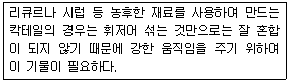
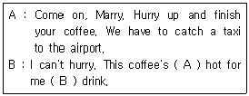
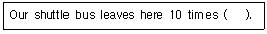
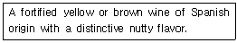
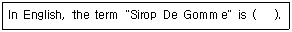
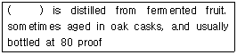
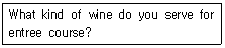
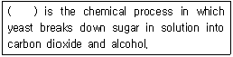

조주기능사 (2007-09-16 기출문제)
1과목: 주류학개론
1. 양주병에 80 proof라고 표기되어 있는 것은 알콜도수 얼마에 해당하는가?
- 80%
- 40%
- 20%
- 10%
(정답률: 96%)

2. White Russian의 재료는?
- Vodka
- Dry Gin
- Old Tom Gin
- Cacao
(정답률: 89%)
3. dry wine이 당분이 거의 남아있지 않은 상태가 되는 주된 이유는?
- 발효 중에 생성되는 호박산, 젖산 등의 산 성분 때문
- 포도속의 천연 포도당을 거의 완전 발효시키기 때문
- 페노릭 성분의 함량이 많기 때문
- 가당 공정을 거치기 때문
(정답률: 90%)
4. 양조주에 대한 설명으로 옳은 것은?
- 당질 원료 또는 당분질 원료에 효모를 첨가하여 발효시켜 만든 술이다.
- 발효주에 열을 가하여 증류하여 만든다.
- Amaretto, Drambuie, Cointreau 등은 양조주에 속한다.
- 증류주 등에 초근, 목피, 향료, 과즙, 당분을 첨가하여 만든 술이다.
(정답률: 83%)
5. 다음 중 가장 강하게 흔들어서 조주해야 하는 칵테일은?
- Martini
- Old fashion
- Sidecar
- Eggnog
(정답률: 75%)
6. 음료류의 식품유형에 대한 설명으로 틀린 것은?
- 탄산음료 : 먹는 물에 식품 또는 식품첨가물(착향료 제외)등을 가한 것에 탄산가스를 주입한 것을 말한다.
- 착향탄산음료 : 탄산음료에 식품첨가물(착향료)을 주입한 것을 말한다.
- 과실음료 : 농축과실즙(또는 과실분), 과실쥬스 등을 원료로 하여 가공한 것(과실즙 10%이상)을 말한다.
- 유산균음료 : 유가공품 또는 식물성 원료를 효모로 발효시켜 가공(살균을 포함)한 것을 말한다.
(정답률: 60%)
7. 다음 중 풀케(pulque)를 증류해서 만든 술은?
- Rum
- Vodka
- Tequila
- Aquavit
(정답률: 83%)
8. Pousse cafe를 만드는 재료 중 가장 나중에 따르는 것은?
- Brandy
- Grenadine
- Creme de menthe(white)
- Creme de Cassis
(정답률: 68%)
9. 다음 중 꿀을 사용하는 칵테일은?
- Zoom
- Honeymoon
- Golden cadillac
- Harmony
(정답률: 20%)
10. 조주의 부재료로 사용되는 시럽으로 석류열매의 색과 향을 가진 것은?
- grenadine syrup
- maple syrup
- gum syrup
- plain syrup
(정답률: 89%)
11. 수분과 이산화탄소로만 구성되어 식욕을 돋우는 효과가 있는 음료는?
- mineral water
- soda water
- plain water
- cider
(정답률: 91%)
12. Blue Bird 칵테일은 어떤 종류의 글라스를 사용하는가?
- Tumbler Glass
- Sour Glass
- Old fashion Glass
- Cocktail Glass
(정답률: 64%)
13. 다음 중 주재료가 나머지 셋과 다른 것은?
- Grand Marnier
- Drambuie
- Triple Sec
- Cointreau
(정답률: 80%)
14. 숙성하지 않은 화이트 데킬라의 표시 방법은?
- anejo
- joven
- old
- mujanejo
(정답률: 24%)
15. grain whisky에 대한 설명으로 옳은 것은?
- silent spirit라고도 불리운다.
- 발아시킨 보리를 원료로 해서 만든다.
- 향이 강하다.
- Andrew Usher에 의해 개발되었다.
(정답률: 47%)
16. “Twist of lemon peel"의 의미로 옳은 것은?
- 레몬껍질을 비틀어 짜 그 향을 칵테일에 스며들게 한다.
- 레몬을 반으로 접듯이 하여 과즙을 짠다.
- 레몬껍질을 가늘고 길게 잘라 칵테일에 넣는다.
- 과피를 믹서기에 갈아 즙 성문을 2~3방울 칵테일에 떨어뜨린다.
(정답률: 70%)
17. French Vermouth에 대한 설명으로 옳은 것은?
- 와인을 인위적으로 착향시킨 담색 무감미주
- 와인을 인위적으로 착향시킨 담색 감미주
- 와인을 인위적으로 착향시킨 적색 감미주
- 와인을 인위적으로 착향시킨 적색 무감미주
(정답률: 42%)
18. 다음 중 우리나라의 전통주가 아닌 것은?
- 소흥주
- 소곡주
- 문배주
- 경주법주
(정답률: 60%)
19. 일반적으로 스테인리스 재질로 삼각형 컵이 등을 맞대고 있으며, 바에서 칵테일 조주시 술이나 주스, 부재료 등의 용량을 재는 기구는?
- Bar spoon
- Muddler
- Strainer
- Jigger
(정답률: 93%)
20. 화이트 포도 품종인 샤르도네만을 사용하여 만드는 샴페인은?
- Bland de Noirs
- Blanc de blancs
- Asti Spumante
- Beaujolais
(정답률: 38%)
21. 다음 중 Snowball 칵테일의 재료로 사용되는 것은?
- Gin, Anisette, Light Cream
- Gin, Anisette, Sugar
- Gin, Grenadine, Light Cream
- Rum, Grenadine, Light Cream
(정답률: 40%)
22. 다음중 원산지가 프랑스인 술은?
- Absinthe
- Curacao
- Kahlua
- Drambuie
(정답률: 33%)
23. simple syrup을 만드는 데 필요한 것은?
- lemon
- butter
- cinnamon
- sugar
(정답률: 85%)
24. Irish Coffee의 재료가 아닌 것은?
- Irish Whiskey
- Rum
- hot coffee
- sugar
(정답률: 67%)
25. 칵테일의 조주방법 중 Floating에 대한 설명으로 옳은 것은?
- 재료의 비중을 이용하여 띄우는 것이다.
- 칵테일 글라스 가장자리에 설탕을 묻히는 방법이다.
- 증류주에 불을 붙이는 방법이다.
- 얼음을 갈아 칵테일을 차갑게 만드는 것이다.
(정답률: 84%)
26. 샴페인의 당분이 6g/L이하 일 때 당도의 표기 방법은?
- Extra Brut
- Doux
- Demi Sec
- Brut
(정답률: 23%)
27. ｢V. D. Q. S｣ 표시의 의미로 가장 적합한 것은?
- 위스키 등급 중 가장 좋은 등급이다.
- 와인의 품질검사 합격 증명이다.
- 숙성년도가 2년 이상인 보드카이다.
- 알코올 함유량 9% 이상의 브랜디이다.
(정답률: 60%)
28. Gibson에 대한 설명으로 틀린 것은?
- 알코올 도수는 약 36도에 해당한다.
- 베이스는 Gin이다.
- 칵테일 어니언으로 장식한다.
- 기법은 Shaking이다.
(정답률: 63%)
29. 다음 중 청주의 주재료는?
- 옥수수
- 감자
- 보리
- 쌀
(정답률: 69%)
30. 음료에서 사용하는 용어인 “Dry"의 의미와 가장 가까운 샴페인 용어는?
- Brut
- Sec
- Doux
- Demi-Sec
(정답률: 48%)
2과목: 주장관리개론
31. 오렌지나 레몬을 사용한 혼성주가 아닌 것은?
- Sambuca
- Cointreau
- Grand Marnier
- Lemon Gin
(정답률: 54%)
32. 발포성 와인의 서비스 방법으로 옳은 것은?
- 병을 수직으로 세운 후 병 안쪽의 압축가스를 신속하게 빼낸다.
- 병을 45°로 기울인 후 세게 흔들어 거품이 충분히 나도록 한 후 철사 열 개를 푼다.
- 거품이 충분히 일어나도록 잔의 가운데에 한꺼번에 많은 양을 넣어 잔을 채운다.
- 거품이 너무 나지 않게 잔의 내측벽으로 흘리면서 잔을 채운다.
(정답률: 84%)
33. 다음 중 용량이 가장 작은 글라스는?
- old fashioned glass
- highball glass
- cocktail glass
- shot glass
(정답률: 87%)
34. 다음 중 서비스의 방법으로 적합하지 않은 것은?
- 주문된 음료를 신속, 정확하게 서비스한다.
- 주문은 연장자의 주문을 먼저 받은 다음 여성 손님순으로 주문을 받는다.
- 손님과의 대화 중에 다른 손님의 주문이 있을 때에는 대화중인 손님의 양해를 구한 후 다른 손님의 주문에 응한다.
- 바 카운터는 항상 정리, 정돈하여 청결을 유지한다.
(정답률: 84%)
35. 요리와 와인의 조화에 대한 일반적인 설명으로 틀린 것은?
- 단맛이 나는 요리는 탄닌(tannin)성분이 많은 와인이 어울린다.
- 신선한 흰살생선 요리는 레드와인이 어울린다.
- 양념을 많이 사용한 흰색육류 요리는 레드와인이 어울린다.
- 새콤한 소스를 사용한 요리는 화이트와인이 어울린다.
(정답률: 66%)
36. 다음 중 Gin base에 속하는 칵테일은?
- Stinger
- Old-fashioned
- Martini
- Sidecar
(정답률: 58%)
37. 아래에서 설명하는 주장 기물은?

- bar spoon
- cocktail glass
- cock screw
- shaker
(정답률: 76%)
38. 술을 measure cup에 따를 때 많은 양이 흘러나오는 것을 방지하여, 소량만 나오게 하는 기구는?
- pourer
- muddler
- stopper
- straw
(정답률: 68%)
39. Aperitif에 대한 설명으로 옳은 것은?
- 식사 전에 먹는 식전주이다.
- 디저트용으로 먹는 술이다.
- 메인음식과 함께 먹는 술이다.
- 식사 후에 먹는 식후주이다.
(정답률: 77%)
40. First in first out(FIFO)은 다음 중 무엇에 해당하는 가?
- 매상관리방법
- 칵테일 조주방법
- 저장관리방법
- 노무관리방법
(정답률: 77%)
41. Tequila의 원산지는 어느 나라인가?
- 영국
- 멕시코
- 프랑스
- 이탈리아
(정답률: 81%)
42. Bartender의 직무와 거리가 먼 것은?
- 재고량과 기물 등을 준비한다.
- 영업 보고서를 작성한다.
- 글라스류 및 칵테일 용기 등을 세척, 정리한다.
- 영업 종료 후 재고소자를 하여 매니저에게 보고한다.
(정답률: 84%)
43. 다음 중 Blender로 혼합해서 만드는 칵테일은?
- Harvey wallbanger
- Cuba Libre
- Zombie
- Orange Blossom
(정답률: 40%)
44. 다음 중 바 기물과 거리가 먼 것은?
- ice cube maker
- muddler
- beer cooler
- deep freezer
(정답률: 58%)
45. par stock의 의미로 옳은 것은?
- 일일적정 요구량
- 일일적정 사용량
- 일일적정 재고량
- 일일적정 보급량
(정답률: 71%)
46. happy hour에 대한 설명으로 옳은 것은?
- 사은 특별행사
- 손님이 가장 많은 시간대
- 가격 할인 시간대
- 영업시간 이외의 시간대
(정답률: 87%)
47. 브랜디 글라스의 입구가 좁은 주된 이유는?
- 브랜디의 향미를 한곳에 모이게 하기 위하여
- 술의 출렁임을 발지하기 위하여
- 글라스의 데커레이션을 위하여
- 양손에 쥐기가 편리하도록 하기 위하여
(정답률: 80%)
48. 식음료 서비스의 특성이 아닌 것은?
- 제공과 사용의 분리성
- 형체의 무형성
- 품질의 다양성
- 상품의 소멸성
(정답률: 24%)
49. 칵테일을 만드는 방법으로 적합하지 않은 것은?
- on the rock은 잔에 술을 먼저 붓고 난 뒤 얼음을 넣는다.
- olive는 찬물에 헹구어 짠맛을 엷게 해서 사용한다.
- mist를 만들 때는 분쇄얼음을 사용한다.
- 찬술은 보통 찬 글라스를, 뜨거운 술은 뜨거운 글라스를 사용한다.
(정답률: 74%)
50. Rum에 대한 설명으로 틀린 것은?
- 사탕수수를 압착하여 액을 얻는다.
- 헤비럼(Heavy-Rum)은 감미가 높다.
- 효모를 첨가하여 만든다.
- 감자로 만든 증류주이다.
(정답률: 91%)
3과목: 고객서비스영어
51. 다음 ( )안에 알맞은 것은?
- and
- or
- with
- to
(정답률: 52%)
52. 아래의 대화에서 ( )에 가장 알맞은 것은?

- A : so, B : that
- A : too, B : to
- A : due, B : to
- A : would, B : on
(정답률: 75%)
53. Which of th following is one of aperitif wines as before-meal appetizer?
- Dry sherry
- Port wine
- Chianti
- Mosel
(정답률: 76%)
54. 다음 ( )안에 알맞은 것은?

- in day
- the day
- day
- a day
(정답률: 81%)
55. 아래는 무엇에 대한 설명인가?

- Sherry
- Rum
- Vodka
- Bloody marry
(정답률: 70%)
56. 아래의 ( )안에 알맞은 것은?

- Plain syrup
- Gum syrup
- Grenadine syrup
- almond syrup
(정답률: 23%)
57. 다음 ( )안에 알맞은 것은?

- Vodka
- Brandy
- Whisky
- Dry gin
(정답률: 41%)
58. 다음 중 아래 질문에 가장 적합한 것은?

- Sherry
- Barsac
- Red wine
- Champagne
(정답률: 49%)
59. "Espresso"와 관계 깊은 단어는?
- Whisky
- tea
- coffee
- rum
(정답률: 88%)
60. 다음 ( )안에 알맞은 것은?

- Distillation
- Fermentation
- Classification
- Evaporation
(정답률: 67%)